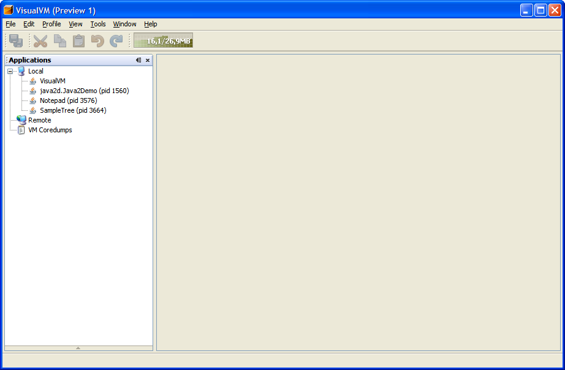
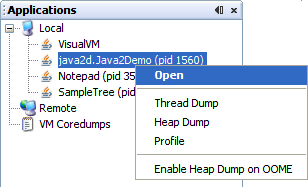
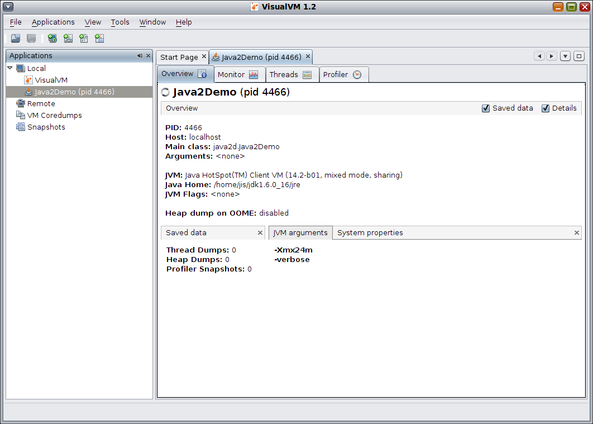
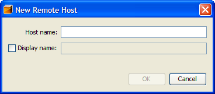

VisualVM is a tool that provides detailed information about Java applications while they are running. It provides an intuitive graphical user interface that allows you to easily see information about multiple Java applications. Java applications are run by a Java Virtual Machine, or VM. The name VisualVM comes from the fact that VisualVM provides VM information visually.
As of October, 2007 VisualVM is still under development and is therefore considered an experimental tool. All feedback and suggestions are welcome! Please send your ideas to feedback@visualvm.dev.java.net.
The VisualVM tool itself must be run with JDK 6. It can display information, however, on any Java application that is running on JDK 1.4.2 or higher. The amount of information VisualVM can provide on a Java application is determined by the version of the JDK that is being used to run that Java application (more details below).
To start VisualVM on Windows, run the visualvm.exe program that is in the \bin folder under the VisualVM install folder. On Unix or Linux use the visualvm shell script that is in the /bin folder.
The initial display is shown in Figure 1. The Applications window has three entries. The first lists Java applications that are running on the same system as VisualVM. The second lists remote systems and the Java applications that are running on each remote system. The third provides a list of core dump files that have been opened recently using the VisualVM tool (note that this feature is disabled in the initial preview release of VisualVM).
To display information about an application, right-click its entry and choose from the items in the context menu (Figure 2). Since VisualVM itself is a Java program, it is shown in the list of local applications. It is important to note, however, that VisualVM cannot be used to Profile itself - only the Overview and Monitor tabs are enabled when VisualVM is the chosen application.
Selecting Open from the context menu for an application will open a tab for that application, as shown on the right in Figure 3.
Each application tab has one or more displays that provide information about the selected Java application.
The Overview display shows high-level information about the application: its process ID, Java version used to run it, the name of the main class, etc.
The Monitor display provides radio buttons so that you can select from four different graphs: Heap, Permanent Generation, Threads, and Classes. Figure 4 shows the heap graph. Total heap space is in red and the actual amount of heap in use is shown in purple.

The Profiler display (Figure 5) provides a user interface for tracking thread state, CPU bottlenecks, and memory usage patterns and problems. It uses dynamic instrumentation of the Java application in order to provide this information, so it introduces some overhead.

VisualVM can display information about Java applications that are running on other systems. To add another system, right-click the Remote entry in the Applications window and then fill in the dialog that is shown in Figure 6. Note that the jstatd utility must be running on the remote system - more information about jstatd is available here.
The VisualVM application can also read binay heap dump files that have been written by a Java Virtual Machine. Note that it is not necessary to open any Java applications in order to use this feature. Just choose Profile > Load Heap Dump from the main menu of VisualVM. Select a binary heap dump file and VisualVM will display detailed information about that heap dump in its HeapWalker, as shown in Figure 7.

The HeapWalker is useful for tracking down memory leaks - its Instances view shows all object instances for a class. You can right-click an object in the References section and choose Find Nearest GC Root, as shown in Figure 8. This will cause the HeapWalker to search for and then display the nearest garbage collection root object.

As shown in the context menu in Figure 2, VisualVM can collect data from an application as it is running. Select Thread Dump from the context menu to create an ASCII file that contains stack traces for each thread currently running in the application. Select Heap Dump from the context menu to create a binary heap dump file.
You can also enable and disable a flag that indicates to the JVM whether or not it should write a heap dump in the event of an OutOfMemoryError (OOME).
The VisualVM features that are available depend on the JDK version that is used to run your application. All features are available if your application is running on JDK 6 or higher, but only a subset is available if your application is running on JDK 1.4.2 or JDK 5. The table below shows the available features.
| Feature | 1.4.2 | 5 | 6 |
| Overview | | | |
| System Properties (in Overview) | | ||
| Monitor | | | |
| Profiler | | ||
| Thread Dump | | ||
| Heap Dump | | ||
| Enable Heap Dump on OOME | |